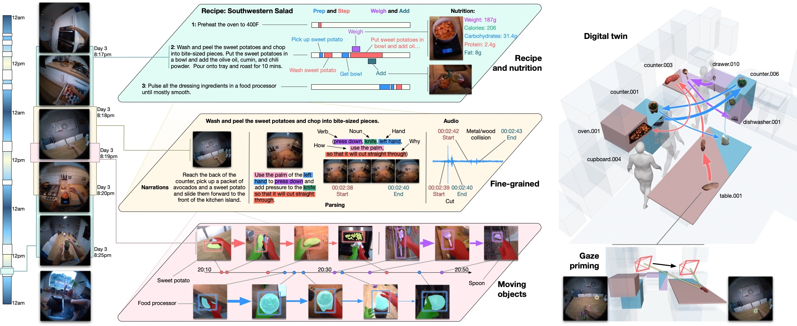
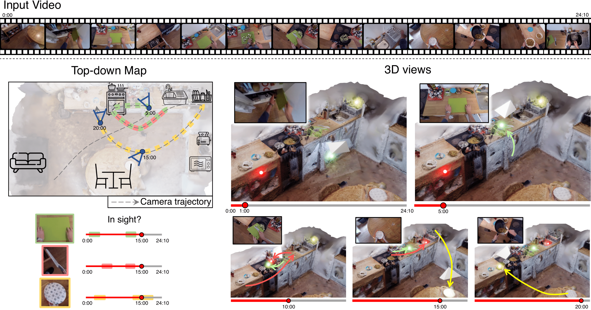
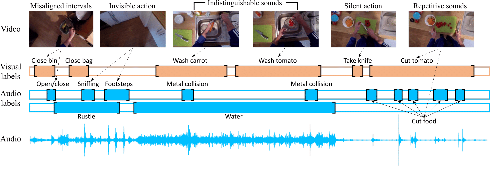

Jacob Chalk
Research Associate - University of Bristol
I am a Research Associate at the University of Bristol and a member of the MaVi research group. My current research is on 4D video understanding, aiming to develop systems that can perceive and reason about dynamic 3D scenes over time.
Previously, as a PhD researcher of Computer Vision at the University of Bristol, supervised by Prof. Dima Damen, my research focus was on leveraging multimodal data for egocentric video understanding. This included topics such as audio-visual deep learning, action recognition/detection, predicting object-interactions using eye-gaze and 3D annotations, and long-term 3D multi-object tracking (thesis available here). During this time, I was also a PhD intern with the Visual Representation Learning team at NAVER Labs Europe.
Prior to my PhD, I earned a First Class Honours MEng in Computer Science from the University of Bristol, where my dissertation on "Video GANs for Human-Object Interactions" was highly graded. Alongside research, I've gained teaching experience across multiple undergraduate modules, contributing to both coursework design and lab-based support.
My technical strengths lie in deep learning, computer vision, and multimodal modelling, with extensive experience in Python (PyTorch) and capabilities with C++ and Javascript.

Latest News
- January 2026 New Role: Started as a Research Associate at the University of Bristol!
- December 2025 New Paper: Prime and Reach paper published to arXiv!
- February 2025 New Role: Started as a PhD Intern at NAVER Labs Europe!
- February 2025 New Dataset: HD-EPIC has been publically released and accepted to CVPR 2025!
- January 2025 Code Released: OSNOM code and camera-ready paper have been released!
- November 2024 New Paper: OSNOM paper published to arXiv and accepted to 3DV 2025!
- September 2024 Journal Paper: EPIC-Sounds Journal Extended version is now available on arXiv!
- April 2024 New Paper: TIM paper and code have been released and accepted to CVPR 2024!
- February 2023 Paper Accepted: EPIC-Sounds has been accepted to ICASSP 2023!
- January 2023 New Dataset: EPIC-Sounds has been publically released!
- September 2021 New Role: Started as a PhD Researcher with Prof. Dima Damen!
Research
* denotes equal contribution

Prime and Reach: Synthesising Body Motion for Gaze-Primed Object Reach
arXiv preprint arXiv:2512.16456, 2025

HD-EPIC: A Highly-Detailed Egocentric Video Dataset
Conference on Computer Vision and Pattern Recognition (CVPR), 2025



EPIC-Sounds: A Large-scale Dataset of Actions That Sound
IEEE Transactions on Pattern Analysis and Machine Intelligence (TPAMI), 2025
IEEE International Conference on Acoustics, Speech, and Signal Processing (ICASSP), 2023
Experience
Honours & Awards
-
Outstanding Reviewer
International Conference on Computer Vision (ICCV 2025)
Conference on Computer Vision and Pattern Recognition (CVPR 2025) - Distinguished Paper Award (EPIC-Sounds) EgoVis 2022/23 · First Joint Egocentric Vision Workshop (CVPR 2024)
- EPIC-KITCHENS Challenges Winner First Joint Egocentric Vision Workshop (CVPR 2024). Placed 2nd in both Audio-Based Interaction Recognition & Detection, 3rd in Action Detection.
- Top 5 Third Year MEng CS/CS+Maths Student Awarded by Netcraft (University of Bristol 2020)
Reviewing
-
Conference Reviewer
CVPR '25, '26 NeurIPS '25 ICCV '25 ECCV '24, '26 ICPR '26 BMVC '26
-
Journal Reviewer
IEEE TPAMI IJCV IEEE OJSP
Workshops
- UniWorld Workshop Organiser European Conference on Computer Vision (ECCV 2026)
- EPIC-KITCHENS Challenges and HD-EPIC Challenge Organiser Third Joint Egocentric Vision Workshop (CVPR 2026)
Teaching
- Applied Deep Learning University of Bristol · 21/22, 22/23, 23/24, 24/25
- Image Processing and Computer Vision University of Bristol · 23/24
- Computer Graphics University of Bristol · 20/21, 21/22, 23/24
- Team Project University of Bristol · 20/21
- Software Engineering Product University of Bristol · 19/20, 20/21
Presentations
- TIM: A Time-Interval Machine Sight & Sound Workshop (CVPR 2024) · Twelve Labs Multimodal Weekly #56
- EPIC-KITCHENS Challenges First Joint Egocentric Vision Workshop (CVPR 2024)
- EPIC-Sounds Oral Presentation ICASSP 2023